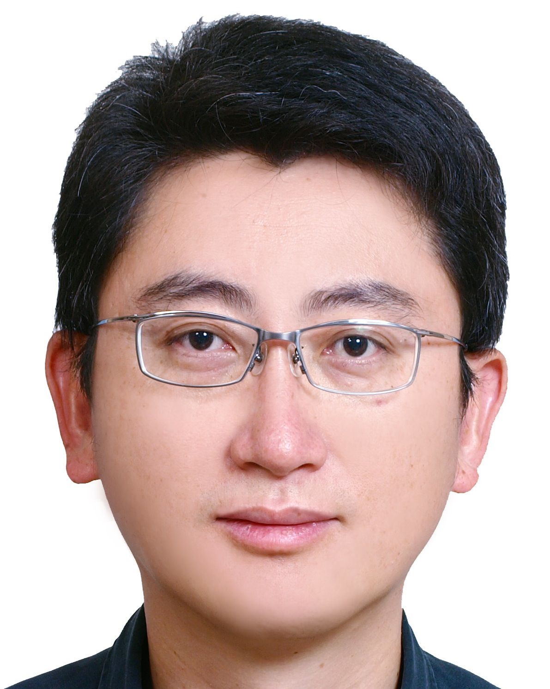

Speakers
Mari Ostendorf
Topic:
Building a Socialbot: Lessons Learned from 10M Conversations
Abstract and Bioostendor
@u.washington.edu
Junichi Yamagishi
Topic:
The Voice Conversion Challenge 2018: Promoting Development of Parallel and Nonparallel Methods
Abstract and Biojyamagis
@nii.ac.jp

Hsin-Min Wang
Topic:
A Research Journey from Music Emotion Recognition to Music Video Generation
Abstract and Biowhm
@iis.sinica.edu.tw

Yuan-Fu Liao
Topic:
A preliminary study on cross-language knowledge transfer for low-resource Taiwanese Mandarin ASR
Abstract and Bioyfliao
@ntut.edu.tw

Yun-Nung Chen
Topic:
Towards Personalized Conversational AI
Abstract and Bio